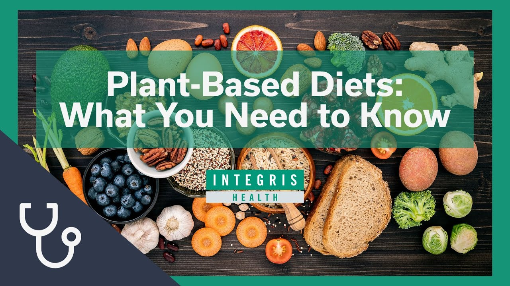

نظام الغذاء القائم على النبات، أو النظام الغذائي القائم على النباتات، هو نمط غذائي يتميز بتركيزه على تناول الأطعمة النباتية واستبعاد أو تقليل استهلاك المنتجات الحيوانية. يعتمد هذا النظام على تناول الخضروات، الفواكه، الحبوب الكاملة، البقوليات، المكسرات، والبذور كمصادر رئيسية للتغذية. يعتبر النظام الغذائي القائم على النبات نمطًا صحيًا ومستدامًا، وقد أظهرت الدراسات أنه يمكن أن يساهم في تحسين الصحة العامة والوقاية من الأمراض المزمنة مثل أمراض القلب، وارتفاع ضغط الدم، والسكري من النوع 2، والسمنة.
- زيادة استهلاك الألياف الغذائية التي تساعد في صحة الجهاز الهضمي والشعور بالشبع. - انخفاض مستويات الكولسترول والدهون الثلاثية في الدم. - تحسين صحة القلب والأوعية الدموية. - تعزيز صحة الجهاز المناعي. - تقليل مخاطر الإصابة بالسكري من النوع 2 وبعض أنواع السرطان.
على تناول مجموعة متنوعة من الأطعمة النباتية الغنية بالعناصر الغذائية المهمة مثل الألياف، الفيتامينات، المعادن، والمضادات الأكسدة. قد يشمل أيضًا استهلاك بعض المنتجات الحيوانية بشكل محدود مثل الألبان والبيض مع استبعاد اللحوم والأسماك والدواجن بشكل كلي.